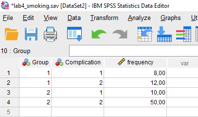

Medical Statistics – Lab 4
SPSS version
Welcome to lab 4 in the medical statistics course. In this lab, we will focus on the analysis of categorical data and the comparison of proportions between groups. We will also perform several statistical tests for the analysis of paired data.
Part 1: Inference for categorical data
Smoking and post-surgical complications
A study was conducted to investigate whether smoking is associated with an increased risk of post-surgical complications. The relationship between smoking status (smoker or non-smoker) and the occurrence of complications following surgery was examined. The outcome of interest was whether or not a complication occurred (yes or no), with smoking status serving as the explanatory variable to compare complication rates between the two groups.
The data from the study are summarized in the following 2x2 contingency table:
| Complication | No Complication | Total | |
|---|---|---|---|
| Smokers | 8 | 12 | 20 |
| Non-smokers | 10 | 50 | 60 |
| Total | 18 | 62 | 80 |
Confidence intervals and hypothesis testing for the difference in proportions using the normal approximation
We can also use the normal approximation to test the hypothesis that the proportion of complications is the same for smokers and non-smokers. This test is known as the two-sample Z test for equality of proportions.
As explained in the syllabus, the two-sample Z test uses the pooled population proportion \(\hat{p}\), which is calculated as the total number of events divided by the total sample size. This pooled proportion is used under the null hypothesis, which assumes that the two groups share the same underlying proportion. The standard error of the difference in proportions is then calculated as \(\sqrt{\hat{p}(1-\hat{p})(1/n_1 + 1/n_2)}\), where \(n_1\) and \(n_2\) are the sample sizes in the two groups.
In contrast, the 95% confidence interval for the difference in proportions does not rely on the pooled proportion. Instead, it calculates the standard error separately for each group using the observed proportions, resulting in an unpooled standard error: \(\sqrt{\frac{p_1(1-p_1)}{n_1} + \frac{p_2(1-p_2)}{n_2}}\), where \(p_1\) and \(p_2\) are the sample proportions for each group. This approach provides an interval that better reflects the variability in the observed data, independent of the null hypothesis assumption.
To conduct the two-sample Z test, we need to create a new dataset containing the above observations. To achieve this, go to File -> New -> Data to create a new data file. Navigate to the Variable View tab and create three variables: Group, Complication, and Frequency. The Group variable should have two levels: Smokers (coded as 1) and Non-smokers (coded as 2), while the Complication variable should have two levels: Complication (coded as 1) and No complication (coded as 2). The Frequency variable will contain the counts of observations for each combination of group and complication status.
Navigate to the Data View tab and enter the data from the contingency table into the new dataset. For example, in the first row in the screenshot below, the Group variable is set to Smokers (value=1), the Complication variable is set to Complication (value=1), and the Frequency variable is set to 8 (number of individuals in that cell of the contingency table). Repeat this process for the remaining rows to enter all the data.

Once the data is entered, we need to weight the data by the Frequency variable to account for the multiple observations in each cell. To do this, go to Data -> Weight Cases. Select the Frequency variable and click OK.
Finally, we can proceed with the two-sample Z test. Go to Analyze -> Compare Means -> Independent-Samples proportions. Select the Group variable as the Grouping Variable and the Complication variable as the Test Variable. Under Confidence Intervals..., select Wald and Wald (Continuity Corrected) to calculate the approximate 95% confidence intervals for the difference in proportions with and without continuity correction. Under Test Type, select Wald H0 (Continuity Corrected) to conduct the two-sample Z test with continuity correction. Click OK to run the test.
Checking of assumptions
For the use of the normal approximation to be valid, the expected number of events and non-events in each group should be at least 5.
Fisher’s exact test
When the expected cell counts are small, the normal approximation may not be appropriate. In such cases, Fisher’s exact test is recommended for testing the association between two categorical variables.
In SPSS, we can perform Fisher’s exact test by going to Analyze -> Descriptive Statistics -> Crosstabs. Select the Group variable as the Row(s) and the Complication variable as the Column(s). Click on Statistics and check the box Chi_square. Click on Exact Tests and check the box Exact. Click OK to run the test.
Vaccine side effects across age groups
A study was conducted to investigate whether the occurrence of vaccine side effects differs across age groups. Researchers categorized side effects into three types: none, mild, and severe. The study participants were divided into three age groups: 18–39, 40–59, and 60+, and data was collected on the type of side effect experienced by individuals in each group.
The research objective was to determine whether the distribution of side effects is consistent across these age groups.
The data is summarized in the following contingency table:
| Age Group | None | Mild | Severe | Total |
|---|---|---|---|---|
| 18–39 | 50 | 30 | 10 | 90 |
| 40–59 | 40 | 40 | 20 | 100 |
| 60+ | 30 | 50 | 40 | 120 |
| Total | 120 | 120 | 70 | 310 |
Chi-square test of homogeneity
Using the new dataset, we can perform a chi-square test of homogeneity to determine whether the distribution of side effects is consistent across the three age groups. Go to Analyze -> Descriptive Statistics -> Crosstabs. Select the Age Group variable as the Row(s) and the Side Effect variable as the Column(s). Click on Statistics and check the box Chi_square. Click OK to run the test.
Checking of assumptions
To use the chi-square test, the expected cell counts should be at least 5 for most cells.
Post-hoc pairwise comparisons
Finally, we are interested in determining which age groups have significantly different distributions of side effects. We start by comparing the first two age groups (18–39 and 40–59). Assuming the name of the age group variable is Age_Group and the three age groups are coded as 1, 2, and 3, we can filter out the third age group (60+) by going to Data -> Select Cases. Select If condition is satisfied and enter the condition Age_Group < 3. Click OK to filter the data.
Now that the data is filtered, we can perform a chi-square test for the subset of the data corresponding to the first two age groups by repeating the steps described above. Manually adjust the p-value for multiple comparisons using the Bonferroni correction.
Part 2: Analysis of paired continous data
Introduction
In this part of the lab, we will analyze paired data on pocket depth before and after an intervention. Pocket depth refers to the depth of the gum pockets around teeth, measured using a periodontal probe. It is an important indicator of periodontal health. Healthy gums typically have pocket depths less than 3 mm, while deeper pockets may indicate conditions such as gingivitis or periodontitis.
The dataset pockets_paired.sav, available from the Datasets menu, contains the following columns:
subjectID: Unique identifier for each participantpocket_depth_before: Average pocket depth (in mm) measured before the interventionpocket_depth_after: Average pocket depth (in mm) measured after the intervention
The objective is to determine whether the intervention significantly reduces pocket depth. We will apply three statistical methods to analyze the paired data:
- Paired t-test
- Sign test
- Wilcoxon signed-rank test
Paired t-test
We start by performing a paired t-test to compare the average pocket depth before and after the intervention. To conduct this analysis in SPSS, follow these steps:
- Perform the Test: Go to
Analyze>Compare Means>Paired-Samples T Test. - Select Variables: Move
pocket_depth_beforeandpocket_depth_afterto thePaired Variablesbox. - Run the Test: Click
OKto run the analysis.
Checking of assumptions
To determine whether it is appropriate to apply the paired t-test to these data, we need to verify that the differences in pocket depth before and after the intervention are normally distributed. We can visually inspect the distribution of differences using a histogram.
First, we need to create a new variable that calculates the difference between the two measurements. In SPSS, a new variable can be created by navigating to Transform > Compute Variable. Enter a name for the new variable (e.g., diff) in the Target Variable field and enter the expression pocket_depth_after - pocket_depth_before in the Numeric Expression field. Then, click OK to create the new variable.
Next, we can create a histogram of the differences in pocket depth to visually assess the normality of the distribution by following these steps:
- Go to
Graphs>Legacy Dialogs>Histogram. - Select the
diffvariable as theVariableand clickOK.
Sign test and Wilcoxon signed-rank test
The sign test is a non-parametric test used to compare two related samples. It is based on the signs of the differences between the pairs of observations. We will apply the sign test to the pocket depth data to determine whether the intervention has a significant effect.
The Wilcoxon signed-rank test is another non-parametric test used to compare two related samples. It is based on the ranks of the absolute differences between the pairs of observations. In this case, the sign test is more appropriate because the Wilcoxon signed-rank test requires the assumption of symmetry in the distribution of differences, whereas the previously constructed histogram suggests that the distribution of these differences is left-skewed.
To perform the sign test and the Wilcoxon signed-rank test in SPSS, follow these steps:
- Perform the Test:
Nonparametric Tests>Legacy Dialogs>2 Related Samples. - Select Variables: Move
pocket_depth_beforeandpocket_depth_afterto theTest Pairsbox. - Run the Test: Check the
Signbox as well as theWilcoxonbox and clickOKto run the analysis.
Part 3: Analysis of paired dichotomous data
In this part of the lab, we will analyze paired dichotomous data from a study investigating the skin response to two substances: dinitrochlorobenzene (DNCB), a contact allergen, and croton oil, a skin irritant. The objective is to determine whether the proportion of patients with a negative response to DNCB is the same as the proportion with a negative response to croton oil.
The data, summarized in the following table, represents the results of simultaneous skin reaction tests on 173 patients with skin cancer:
| DNCB +ve | DNCB -ve | Total | |
|---|---|---|---|
| Croton oil +ve | 81 | 23 | 104 |
| Croton oil -ve | 48 | 21 | 69 |
| Total | 129 | 44 | 173 |
Because the data are paired, we will use the McNemar test to compare the proportions of positive and negative responses to DNCB and croton oil.
Using the data entered in SPSS, we can perform the McNemar test to compare the proportions of positive and negative responses to DNCB and croton oil. To conduct this analysis in SPSS, go to Analyze > Descriptive Statistics > Crosstabs. Move the variables DNCB and Croton_oil to the Row(s) and Column(s) boxes. In the Statistics dialog box, check the McNemar box, uncheck the Chi-square box, and click Continue. Then, click OK to run the analysis.